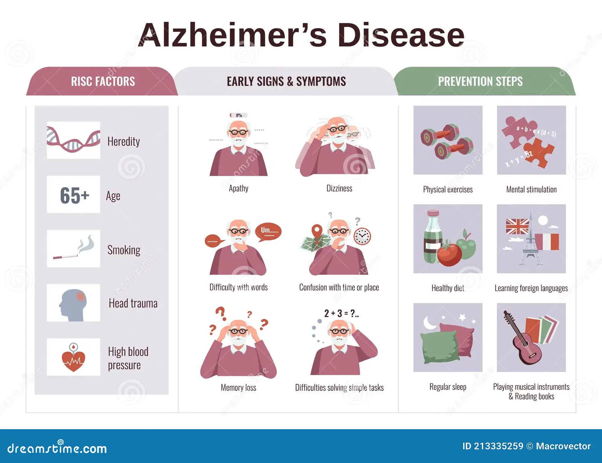
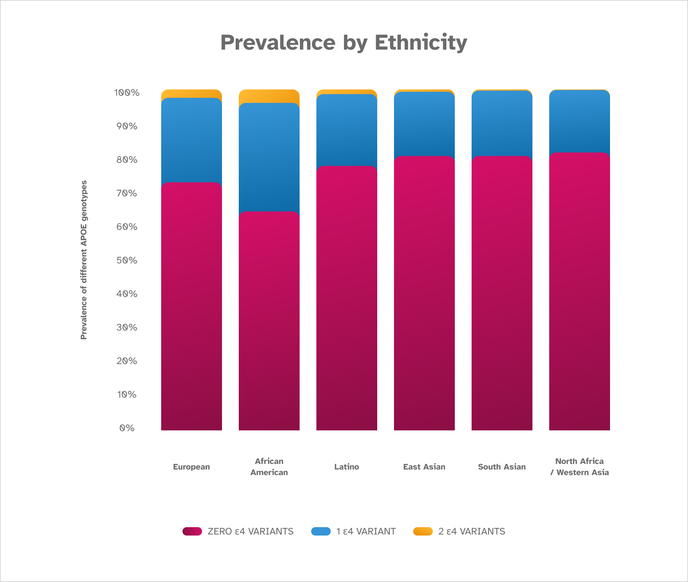

What is Alzheimer’s disease and how common is it? Alzheimer’s disease is a form of dementia. It’s characterized by progressive memory loss, gradual cognitive decline, and personality changes.
There are two different types of Alzheimer’s disease: late-onset Alzheimer’s disease and early-onset Alzheimer’s disease. Both have symptoms that are much the same.

Typical signs and symptoms of Alzheimer’s disease:
- Memory loss that worsens over time
- Mood and personality changes
- Trouble planning or solving problems
- Confusion with place or time
- Difficulty performing daily life activities
The big difference between the types of Alzheimer’s is the age at which symptoms begin. Early-onset Alzheimer’s disease begins at a younger age, with many people first showing symptoms in their 30s, 40s, or 50s. The early-onset type is more rare, accounting for 1% or less of Alzheimer’s cases. Late-onset Alzheimer’s disease is the most common form, and symptoms typically begin after age 65.
Is Alzheimer’s disease genetic?
Yes, genetic factors for Alzheimer’s disease have been identified. The ε4 variant in the APOE gene is the most common genetic variant associated with an increased risk of late-onset Alzheimer’s disease. Having one copy of the ε4 allele increases risk 3-fold, and two copies of ε4 increase risk 8- to 12-fold.
However, ε4 and APOE are not the only determinants for risk. Other genes and genetic mutations also influence the risk for both late-onset and early-onset forms of Alzheimer’s, alongside non-genetic factors.
Alzheimer’s Disease in People with Down Syndrome
People with Down syndrome are at a higher risk of developing dementia similar to Alzheimer’s disease, with 50% showing signs by their 60s. This is possibly due to the location of the APP gene on chromosome 21.
For all individuals, genetic testing is available to identify variants linked to different types of Alzheimer’s disease, and additional genetic factors may be discovered in the future.
Does Alzheimer’s disease run in families?
Yes, Alzheimer’s disease can run in families, especially in families with genetic variants linked to early-onset Alzheimer’s disease. People with a parent or sibling with Alzheimer’s are more likely to develop the condition.
If you have a family history of Alzheimer’s disease or questions about genetic testing for the condition, a genetic counselor may be able to help.

What other risk factors for Alzheimer’s disease are there?
Non-genetic factors associated with higher or lower risk for Alzheimer’s include age, sex, family history, heart health, diet, exercise, intellectual activity, and race/ethnicity.
Understanding these factors can help in managing and reducing the risk of developing Alzheimer’s disease.